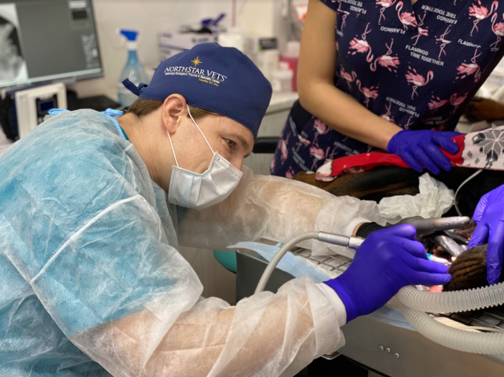

Ветеринарная стоматология относительно новая дисциплина в российской ветеринарии, но в то же время очень востребованная. Можно обратиться только к статистике чтобы понять, насколько питомцы нуждаются в качественном стоматологическом лечении. Так пародонтитом в зависимости от литературного источника болеют от 80% до 90 % собак и около 65% кошек старше 4х лет.
Одна из самых частых проблем, ведущая к кариесу и пародонтиту, – зубной камень. К нему предрасположены декоративные породы собак, а также кокер спаниель, скотч терьер, левретка. В отдельную группу можно выделить брахицефалов, образование зубного камня у данной группы животных в первую очередь обусловлено строением черепа, челюстей, наличие большого количества складок, скученностью зубов.
На втором месте в списке распространенности заболеваний находятся травмы зубов, переломы коронок зубов, стирание зубов с обнажением пульповой камеры, находится.
Следующий раздел – ортодонтия. Многие питомцы имеют врожденные или приобретенные патологии, которые можно исправить с помощью правильного лечения. Проще всего это сделать на ранних стадиях.
Для оказания помощи в нашем отделении ветеринарной стоматологии имеется все необходимое: